队列消息处理器
LabVIEW 2013
“队列消息处理器(QMH)”模板便于并行执行多段代码，以及在段与段之间发送数据。每段代码表示一个任务，如采集数据。其设计模式和状态机相似。这种设计模式可以将每个任务分成多个状态。
QMH模板是生产者/消费者设计模式的一种实现，其中用户界面（生产者）负责生成消息，任务（消费者）负责处理消息。但在QMH模板中，也可从消费者循环生成消息。
该模板包含一个生产者循环和一个消费者循环。用户可根据需求添加消费者循环。
范例
关于修改本模板以用于测量应用程序的范例，见创建项目对话框中的“连续测量和记录”范例项目。
开发者走查
关于本模板开发者走查的详细信息见ni.com。
系统要求
LabVIEW基础版、完整版或专业版开发系统
使用条件
OMH模板用于多个任务并行执行的应用程序，且速率通常各不相同。例如，连续采集、记录并显示两个信号（一个RS-232信号和一个模拟信号）的应用程序。这些信号发生的速率各不相同，因此应用程序必须包含两个并行运行的循环。此外，每个循环分为以下状态：
- 初始化数据采集硬件
- 采集数据
- 将采集数据记录至磁盘
- 在波形图表中显示采集到的数据
- 将硬件设置为安全状态
- 停止数据采集并关闭硬件
该应用程序需要一个交互式用户界面，即应用程序执行其他命令时，用户可以单击按钮。因此，应用程序需要第三个并行循环，用于持续监控前面板事件，例如下列命令：
- 开始RS-232采集
- 停止RS-232采集
- 启用RS-232记录
- 禁用RS-232记录
- 开始模拟数据采集
- 停止模拟数据采集
- 启用模拟数据记录
- 禁用模拟数据记录
QMH模板提供一个编写此类应用程序的起点。
概述
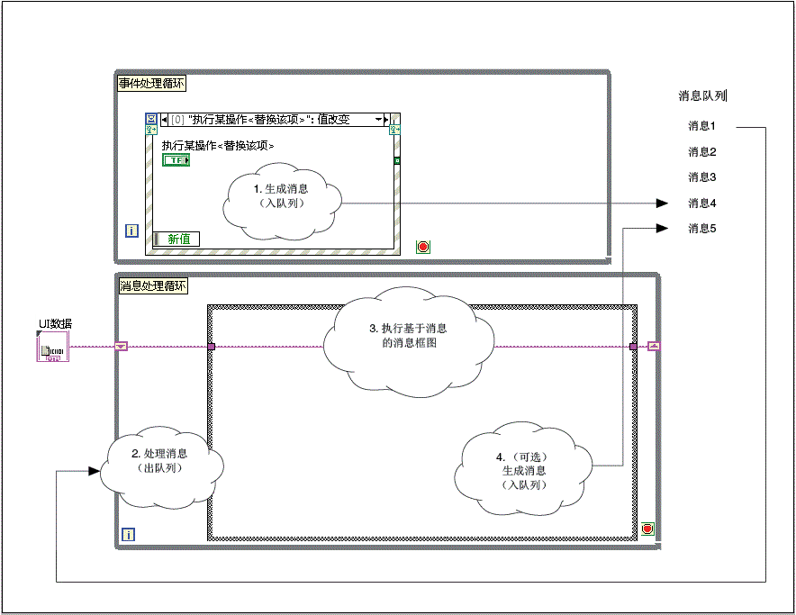
该模板重复执行下列步骤：
- 用户与前面板交互，导致事件处理循环(EHL)中的事件结构生成一个消息。LabVIEW将消息存储在队列中。
- 消息处理循环(MHL)从消息队列中读取消息，将消息清除。
- 消息本身是一个字符串，匹配MHL条件结构的一个分支。因此，读取消息将执行条件结构中对应的分支。该分支对应于一个消息，因而被称为消息框图。
- （可选）消息框图生成另一个消息，存储在消息队列中。
注：
- EHL为生产者循环。MHL为消费者循环。这两个循环并行运行，且由消息队列连接，便于循环之间进行通信。
- 消息队列是一个LabVIEW队列，存储用于处理的消息。EHL将消息发送至该队列，而非直接发送至MHL。因此，MHL未处理消息时，EHL也可生成消息。每个消息队列属于一个单独的MHL。
- MHL的每次循环都将读取消息队列中最早的消息，然后执行相应的消息框图。虽然MHL主要负责处理消息，它也可以生成消息。
- 每个循环通过特定的错误处理器子VI处理错误。如队列消息处理器在消息处理循环中遇到错误，则LabVIEW将显示错误消息。
- 应用程序可包含多个MHL。每个MHL对应于应用程序执行的一个任务，如采集或记录数据。
- 注意上面程序框图中的UI数据簇。该簇是MHL中每个消息框图可访问和修改的数据。本模板中，该簇被定义为一个自定义类型：UI Data.ctl。每个自定义类型属于一个单独的MHL。
运行本模板
- 在项目浏览器窗口，打开并运行Main.vi。
- 单击前面板输入控件，观察显示控件显示中列出的消息。
修改本模板
确定需求
下表总结了修改本模板时必须作出的设计决定：
| 设计决定 |
范例 |
详细信息 |
| 确定待添加的MHL数量。每个MHL定义一个和其他任务并行执行的任务。 |
一个应用程序需要采集数据且并行记录该数据至磁盘。
该应用程序包含两个任务：数据采集和数据记录。因此，需要使用两个消息处理循环。
|
创建消息处理循环 |
对于每个MHL，确定待添加的消息框图。
消息框图是MHL中条件结构的分支。每个分支对应于任务可能处于的一个状态。因此，确定待添加的消息框图前，先将每个任务分成多个状态。
|
希望将数据采集任务分成三个状态：Initialize、Acquire Data和Exit。因此，需要在MHL中创建这些采集数据的消息框图。
希望将数据记录任务分成三个状态：Initialize、Log和Close。因此，需要在MHL中创建这些记录数据的消息框图。
|
创建消息框图 |
| 确定MHL的消息框图所需的数据。 |
数据采集MHL的每个消息框图需要访问一个硬件引用。"Initialize"消息框图需打开该参考，"Acquire Data"消息框图使用该参考采集数据，"Exit"消息框图则关闭该参考。 |
定义消息处理循环所需的数据 |
| 确定每个消息框图的执行时间。消息框图在MHL收到相应的消息后执行。因此，需要决定何时将每个消息发送至MHL。可从前面板控件或消息框图发送消息。 |
希望添加一个按钮，发送"Initialize"消息至数据采集MHL。
之后，希望"Initialize"消息框图发送"Acquire Data"消息至同一MHL。
|
添加发送消息至消息处理循环的控件或发送消息至消息处理循环，具体依据用户是否希望用控件发送消息。 |
| 确定是否希望"Exit"消息停止每个MHL。“消息出队”VI使用该消息，原因是它可以关闭MHL。 |
希望每个MHL收到"Stop"消息（而不是"Exit"消息）时关闭。 |
修改停止消息处理循环的消息 |
| 必须确定是否需要忽略EHL或MHL中某些特定的错误。 |
从消息队列读取消息时，希望忽略网络超时错误。 |
忽略事件处理循环和消息处理循环中的错误 |
创建消息处理循环
消息处理循环(MHL)表示应用程序可与其他任务并行执行的任务，如采集数据或记录数据。每个MHL可被分成多个子任务，对应于各个状态。MHL由下列部分构成：
- 一个消息队列
- 一个从消息队列读取消息的While循环
- 对于每个可能被读取的消息，还有一个包含分支（也称消息框图）的条件结构，其中，每个消息对应于任务的一个状态
- （可选）MHL的每个消息框图可访问的数据
按照下列步骤，添加一个MHL：
- 本模板包含一个自定义类型，定义了放置所有消息队列引用句柄的簇。默认情况下，该自定义类型只有一个队列。按照下列步骤，为该自定义类型添加一个队列：
- 在项目浏览器窗口，打开Message Queue.lvlib:Create All Message Queues.vi。
- 右键单击所有消息队列常量并打开自定义类型：
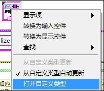
LabVIEW会启动控件编辑器窗口。
- 展开消息队列簇的边框。
- 创建簇中UI队列引用句柄的一个副本。
- 重新命名这个新的队列引用句柄。例如：
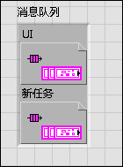
- 选择文件»应用改动，关闭控件编辑器窗口。消息队列自定义类型将包含新添加消息队列。
- 修改Create All Message Queues.vi，执行下列步骤：
- 获取消息队列引用
- 将该队列捆绑至消息队列输出簇
- （可选）向新MHL发送初始消息
下面的截图显示了一个完成上述步骤的代码范例：
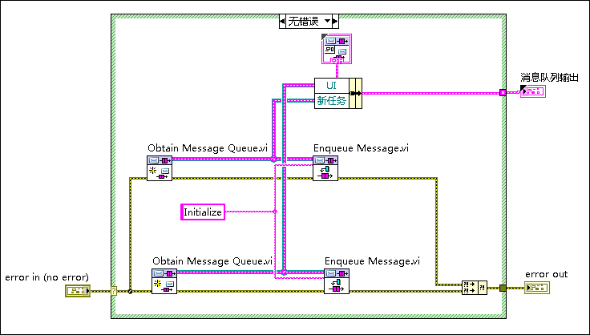
- （可选）如MHL需要访问数据，创建按一个表示该数据的自定义类型。
- 在Main.vi中，创建表示该任务的消息处理循环：
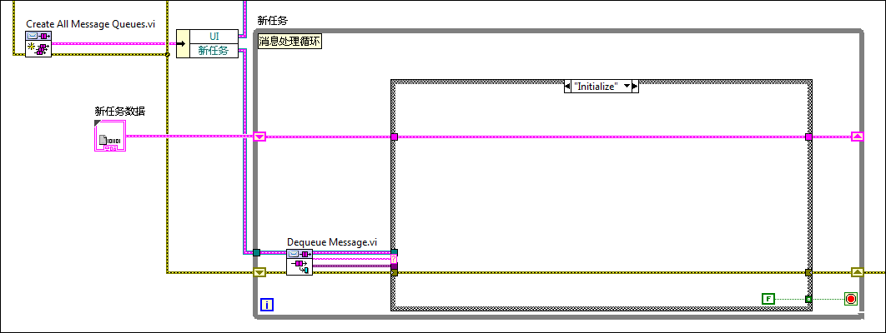
注：
- 注意在步骤2中，新任务队列引用句柄已被绑定至消息队列输出簇。上面的代码显示了该簇在何处解除捆绑，以及新任务队列的连线分支与新任务MHL的连线方式。
- 注意在步骤2中，可选择将初始消息发送至消息队列。步骤2中的代码显示了初始消息Initialize。上面的代码显示了收到该消息时执行的消息框图(Initialize)。
- 注意在步骤4中，可选择创建一个自定义类型。上面的代码显示了该自定义类型新任务数据的连线方法，以便MHL可以使用。
- 如希望新任务向UI队列发送消息，应将UI队列引用句柄的连线分支与新任务循环相连。
- 上面的代码显示了“假”常量与While循环的条件接线端相连。每个MHL中，只有一个消息框图可以使MHL停止执行。这种设计可以避免应用程序意外关闭或不完全关闭，确保下列情况：
- MHL关闭前，关闭代码仅在右侧运行。
- 关闭代码总是运行直到彻底完成。
- 为使Main.vi的程序框图更简洁、可读性更强，可将每个MHL封装到一个子VI中。为进一步组织项目，还可将每个子VI、所有支持的VI及其数据自定义类型放入项目库。关于该设计的范例，见创建项目对话框中的“连续测量和记录”范例项目。
- 上图中的MHL无需访问“停止事件”连线。模板中的MHL使用该连线执行“触发用户事件－停止”VI，该VI将关闭事件处理循环。其他MHL无需执行此操作。
- 添加消息框图至MHL中的条件结构。为减少出错和非预期行为，确保每个MHL包含下列消息框图：
- 负责对任务进行初始化的消息框图；比如，该框图可能连接至硬件设备，或为数据记录打开文件。
- 处理无法识别的消息的消息框图。
- 执行时释放消息队列并停止循环的消息框图。例如：
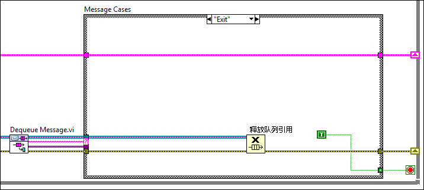
默认情况下，触发该消息框图的消息为"Exit"，用户可修改停止消息。
- （可选）如应用程序要求MHL停止执行任务，但保持活动状态（以便将来重启任务），则需要创建一个使用“清空队列”函数的消息框图，以便删除全部待处理的消息。
例如，在连续测量应用程序中，可使用开始测量和停止测量按钮。单击开始测量初始化MHL，该循环通过不断向自身发送同样的消息实现继续执行。在该应用程序中，单击停止测量应同时停止测量并清空消息队列，但不会停止MHL。如未清除消息队列，单击停止测量将不会产生任何影响。消息队列包含更多消息以便继续测量，同时每个消息还会生成同一类型的其他消息。
- 在EHL中添加代码，发生错误或应用程序停止时命令新的MHL停止执行，即执行步骤5c中创建的消息框图。将该代码添加至事件结构和“错误”分支，如下图所示：
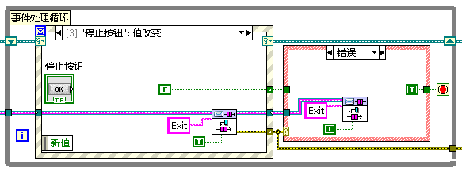
- 发送消息至MHL。
创建消息框图
消息框图是条件结构的一个分支，位于消息处理循环内部，负责处理特定的消息，类似于状态机的一个状态。
消息框图是条件结构的一个分支，用一个字符串标记。当MHL收到和该标签匹配的消息时执行。
按照下列步骤，创建一个消息框图：
- 对于表示任务的MHL，在条件结构中添加一个分支。
 | 提示 如在模板中的MHL添加消息框图，可创建"---Copy This Frame---"分支的副本，自动将数据和错误连线包含在新消息框图中。 |
- 对于触发该消息框图执行的消息，可在条件选择器标签中输入其文本。例如，下面的消息框图将在LabVIEW从消息队列中读取到"New Message"时执行：

- 添加收到该消息时需要执行的代码。完成该步骤时，需注意下列事项：
- 如需访问和修改任务数据，可调用“按名称解除捆绑”和“按名称捆绑”函数：
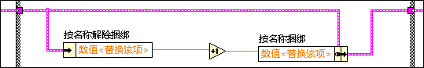
- 为确保跟踪到所有错误，可调用“合并错误”函数，将分支中所有节点的错误合并。
- 如需访问消息数据，可将消息数据输入隧道连线至“变体至数据转换”函数：
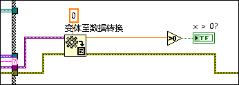
- 如需向消息队列发送消息，可调用“消息入队”VI。
- 如需执行消息框图，可发送消息至MHL。发送的消息必须和步骤2中输入的消息框图标签匹配。
定义消息处理循环所需的数据
模板中的UI Data.ctl是一个自定义类型，定义了MHL可访问的数据簇：

按照应用程序的实际需求，可对该自定义类型进行修改。例如，若MHL中多个消息框图需要修改同一个布尔输入控件，可添加一个布尔输入控件至该自定义类型。
存在多个MHL时，应为每个MHL创建一个自定义类型。这种设计确保了一个MHL无法访问另一个MHL的数据，因而可以避免出错。
添加发送消息至消息处理循环的控件
- 在前面板上添加一个输入控件。
- （可选）如需消息框图通过编程修改该控件，可捆绑控件引用句柄至MHL的自定义类型。
- 在事件处理循环中给事件结构添加一个事件分支。
- 配置事件结构：当新按钮的值发生变化时，触发事件：

- 单击确定。LabVIEW会在事件结构中创建一个事件分支。
- 拖曳新控件程序框图接线端至该事件分支的内部，将接线端与事件相关联。
- 在事件分支中添加代码，发送消息至MHL。
发送消息至消息处理循环
消息本身是字符串，用于命令MHL执行一个消息框图。消息由EHL生成并存储在消息队列中。MHL的每次循环都读取消息队列中最早的消息，然后执行相应的消息框图。
按照下列步骤，发送消息至MHL：
- 确定应用程序将要发送消息的部分，以及将要接收消息的MHL。可以从EHL或消息框图发送消息。
- 确定MHL收到该消息时执行的消息框图。确保该消息框图存在，且和希望发送的消息名称一致。如消息框图不存在，可创建消息框图。
- 在Main.vi中，访问表示接收方MHL消息队列的连线。将由“创建所有消息队列”VI的消息队列输出簇返回的连线解除捆绑，访问该连线。Main.vi已经包含了解除捆绑UI队列引用句柄的代码，如下图所示：
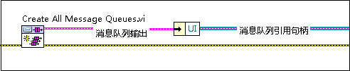
展开“按名称解除捆绑”函数，访问所有MHL消息队列的连线。
- 在应用程序将要发送消息的部分，创建下列代码：
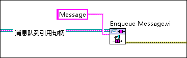
上述代码中，Message是指和步骤2中确定的与消息框图相匹配的文本，“消息队列引用句柄”是指步骤3中确定的连线。
 | 注 “消息入队”VI可通过模板的项目浏览器窗口或快速放置功能找到。 |
- （可选）如需指定该消息代替队列中已经存在的其他消息，可将“真”常量连线至“消息入队”VI的优先消息？输入接线端：

高优先级的消息通常为紧急停止的情况预留。这些消息将被放置在消息队列的头部，这样放置可以确保这些消息被优先读取。
- （可选）如需在发送消息时附带发送数据，可将需要发送的值连线至“消息入队”VI的消息数据输入接线端。该接线端可连接任何类型的数据。例如，下列代码在发送消息时附带发送一个双精度浮点型数值：

由于该接线端的数据类型为变体，LabVIEW在输入接线端处显示了一个强制转换点。
修改停止消息处理循环的消息
消息本身是字符串，可以按实际需要创建或修改消息，不需要修改自定义类型。但本模板定义了一个消息：Message Queue.lvlib:Dequeue Message.vi定义了Exit消息。

如希望通过其他消息（而不是Exit消息）关闭MHL，应对该VI中的消息进行修改。
处理无法识别的消息
确保MHL的所有条件结构都包含一个默认消息框图。该框图中的代码在MHL读取到没有对应的消息框图时执行。包含一个默认消息框图十分重要，因为消息是用户编程时输入的字符串，而非从枚举型中选择的值。
忽略事件处理循环和消息处理循环中的错误
按照下列步骤，可为EHL和MHL指定其各自的错误处理器子VI可以忽略的错误。
- 在项目浏览器窗口中，打开Error Handler - Event Handling Loop.vi或Error Handler - Message Handling Loop.vi（取决于LabVIEW需要忽略哪里的错误），显示程序框图。
- 定位标签为忽略错误（静态列表）的数组常量：
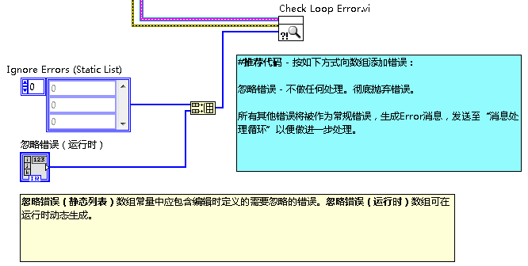
To ignore errors in the EHL or MHL, add error codes to the array. Specify one error code per array element. The errors to ignore depend on your application.例如，通过网络读取队列时，可能需要忽略超时错误。
如需在运行时动态设定忽略的错误，可将错误处理器子VI的忽略错误（运行时） 输入与数组输入控件相连。每个数组元素中设定一个错误代码。
LabVIEW将所有未设定为可忽略的错误将被作为常规错误。LabVIEW会将常规错误作为Error消息发送给MHL，然后由MHL决定当前应用程序如何对常规错误进行处理。
启用消息处理循环编程修改控件
如需启用MHL编程修改某个控件，应创建一个该控件的引用句柄，并将其捆绑至存储该MHL数据的自定义控件。下面将UI Data.ctl作为一个例子。
- 创建控件引用句柄并将其放入MHL的"Initialize"分支中。
- 打开UI Data.ctl，展开簇以便放置引用句柄。
- 在“Initialize”分支中，展开“按名称捆绑”函数的新接线端，并将控件引用句柄连线至该接线端：
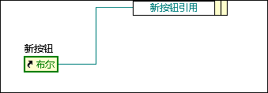
此时，所有可访问UI Data.ctl的消息分支都可以访问该控件的引用句柄。例如，以下代码中显示了"Disable Button"消息框图，该框图通过上述控件引用句柄禁用前面板的按钮并使其变灰：
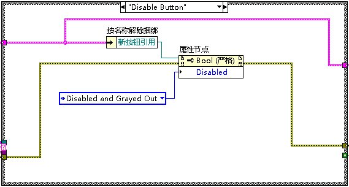
涉及的LabVIEW功能和概念
开发者走查
关于如何使用和自定义该范例项目的开发者走查的详细信息见ni.com。
重要信息
版权
© 2013 National Instruments.版权所有
根据版权法，未经National Instruments公司事先书面同意，本发行物不得以任何形式（包括电子或机械形式）进行全部或部分复制或传播，包括影印、录制、储存于任何信息检索系统中，或翻译。
National Instruments公司尊重他方的知识产权，也恳请用户能给予我们同样的尊重。NI软件受版权法及其他知识产权法的保护。在将NI软件用于复制为他方所有的软件或其他资料的任何场合，NI软件仅可用于在符合许可证或其他法律限制的情况下复制上述资料。
最终用户许可协议和第三方法律声明
可在下列位置找到最终用户许可协议(EULA)和第三方法律声明：
- <National Instruments>\_Legal Information和<National Instruments>目录下有法律声明。
- <National Instruments>\Shared\MDF\Legal\license目录下有最终用户许可协议。
- 如需使NI产品生成的安装程序中包含法律相关信息，请参考<National Instruments>\_Legal Information.txt。
商标
LabVIEW、National Instruments、NI、ni.com和National Instruments公司标识，以及鹰形标识均为National Instruments Corporation的商标。关于其他National Instruments商标的详细信息见ni.com/trademarks的Trademark Information部分。
此处提及的其他产品和公司名称均为其各自公司的商标或商业名称。
专利权
关于NI产品和技术的专利权，请查看软件中的帮助»专利信息，光盘中的patents.txt文件，或ni.com/patents上的National Instruments Patent Notice。